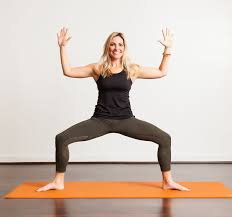

Yoga Pose Detection
Follow the Target Pose
Target Pose

Feedback
Pose: No Pose Detected
Status: No Pose
Feedback:
Instructions
- Ensure full body is visible in the camera.
- Match your posture to the target image.
- Hold the pose for 5 seconds for detection.
- Use a plain background for better accuracy.